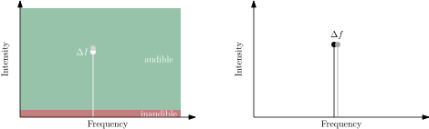
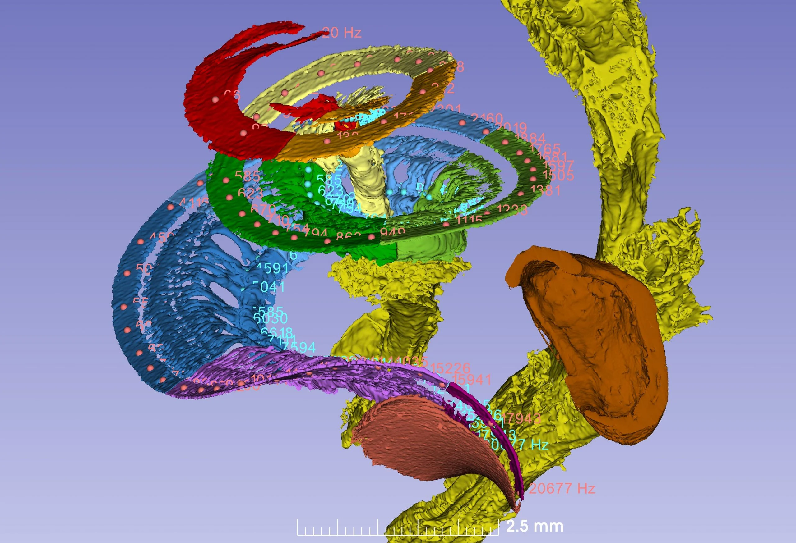
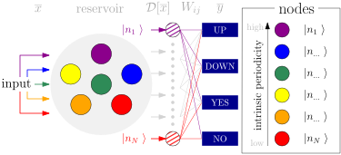
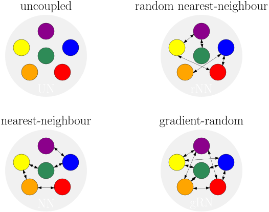
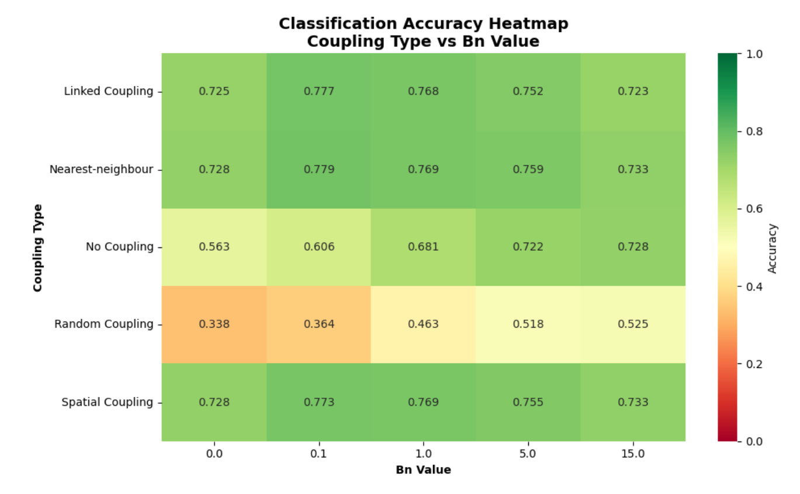
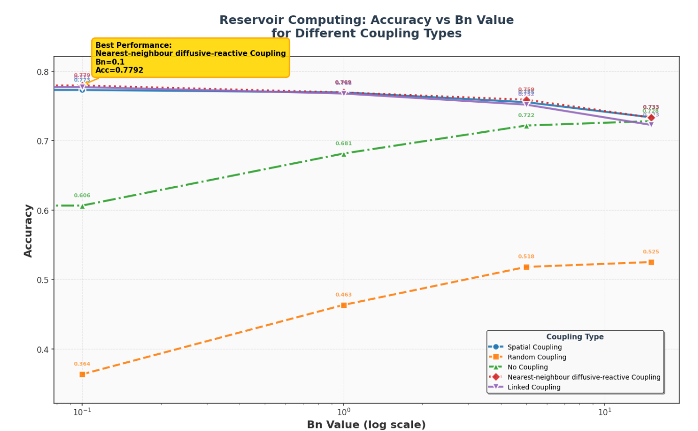
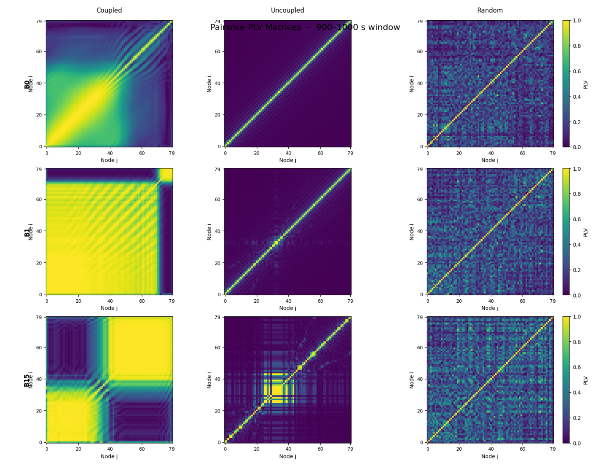
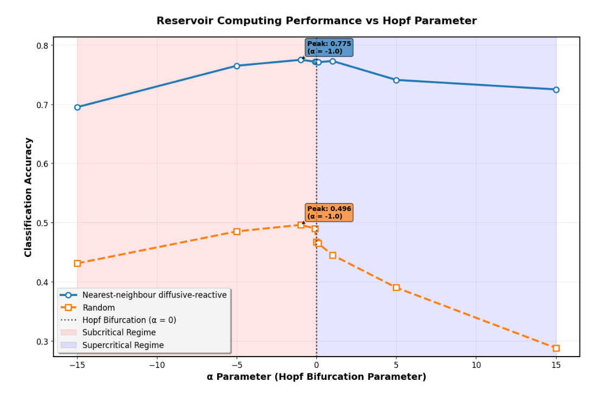
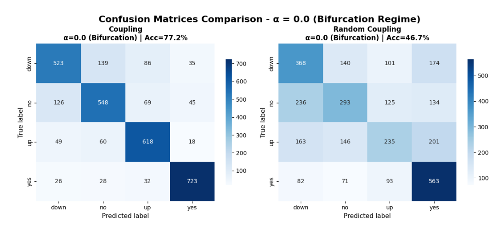

The inner ear as a reservoir computer
The role of tonotopy in classification performance
Bastian Epp, Nicolai Ege-Leivestad
INTRODUCTION
The holy grail of hearing research


Our auditory system is excellent in processing and separation of acoustic information
Cornerstones of hearing performance
Sensitivity, selectivity - in the end: Information encoding and processing

An intrinsic property of a (sub-) critical oscillator that can be realized physically (Lenk et al., 2023)
Why did evolution pick this solution
Here: Tonotopic organization. Is it helpful for encoding of information?
The cochlea (and beyond) is a dynamic information processing system

Previous work:
Entrainment enabled by coupling of oscillating elements is beneficial to encode a stimulus (Epp & Berrig-Rasmussen, CHAOS (in press))
The questions in focus:
Is tonotopic organization in a dynamic information processing system beneficial?
Nature likely found good reasons for doing as it did...
METHODS
The elements
Stimulation/Input
Transformation/encoding
Evaluation/decoding
Model: Epp & Berrig-Rasmussen (CHAOS, in press)
The elements
Stimulation/Input
Perceptually relevant representation of sound signal
Transformation/encoding
Filtering effect, high "spatial" resolution / number of channels
Evaluation/decoding
Evaluate amount of "information" with as few as possible restrictions on metric
Model: Epp & Berrig-Rasmussen (CHAOS, in press)
The elements
Stimulation/Input
Perceptually relevant representation of sound signal
Spectro-temporal representation
Transformation/encoding
Filtering effect, high "spatial" resolution / number of channels
Oscillators, different tuning, nonlinear and coupled
Evaluation/decoding
Evaluate amount of "information" with as few as possible restrictions on metric
Reservoir computer
Model: Epp & Berrig-Rasmussen (CHAOS, in press)
The elements
Stimulation/Input
Perceptually relevant representation of sound signal
Spectro-temporal representation
Mel-spectrogram
Transformation/encoding
Filtering effect, high "spatial" resolution / number of channels
Oscillators, different tuning, nonlinear and coupled
System of HOPF oscillators with tunable nonlinearity and periodicity
Evaluation/decoding
Evaluate amount of "information" with as few as possible restrictions on metric
Reservoir computer
Keyword spotting / accuracy
Model: Epp & Berrig-Rasmussen (CHAOS, in press)
The type of system used
A very basic inner ear - Not necessarily a beast alive
The approach:
Let a system of coupled oscillators do the information processing
Information processing depends on "global" (coupled) dynamics rather than local dynamics
An "inner ear" as a reservoir
A basic classification task - keyword spotting

Assumption: Classification performance $\propto$ information contents
see corresponding DAGA proceedings
An "inner ear" as a reservoir - conditions

Is tonotopic organization in a dynamic information processing system beneficial?
An "inner ear" as a reservoir - conditions
Is tonotopic organization in a dynamic information processing system beneficial?
An "inner ear" as a reservoir - conditions
Is tonotopic organization in a dynamic information processing system beneficial?
An "inner ear" as a reservoir - conditions
Is tonotopic organization in a dynamic information processing system beneficial?
RESULTS
Coupling conditions and degrees of nonlinearity
Find effects of coupling and nonlinear dynamic phenomena


The difference - driven systems
Consistent with entrainment effects

High phase-locking across nodes
Maybe just some artifact?
Same for another type of oscillator


Crticial is "critical" and coupling helps!
SUMMARY AND DISCUSSION
The auditory system in abstract form
Systems of coupled nonlinear oscillators show plausibe phenomena and key properties
Coupling enables global phenomena
Collective response of system affects information encoding
Tonotopy is better than no tonotopy
Degree of nonlinearity affects performance
Tonotopic structure leads to better performance than uncoupled and random
Analysis of node dynamics allows to identify mechanisms underlying information encoding
Can we push this further?
Reservoir with plausible frequency interval
Cochlea model as reservoir
Multiplex model to link to neural dynamics